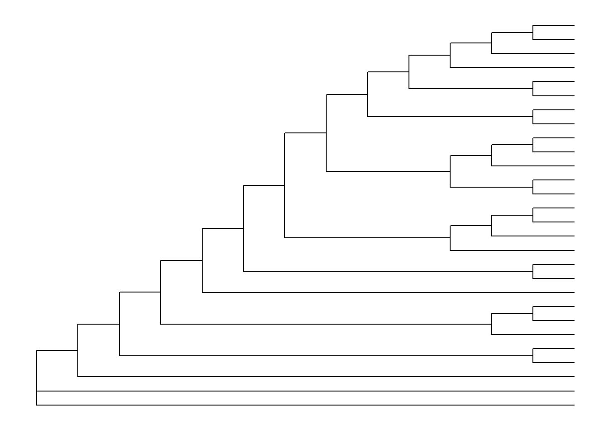

Phylogenetic Tree Visualization
This lesson demonstrates how to use ggtree, an extension of the ggplot2 package to visualize phylogenetic trees.
The ggtree package
- ggtree Bioconductor page: bioconductor.org/packages/ggtree.
- ggtree homepage: guangchuangyu.github.io/ggtree (contains more information about the package, more documentation, a gallery of beautiful images, and links to related resources).
- ggtree publication:
- G Yu, DK Smith, H Zhu, Y Guan, TTY Lam*. ggtree: an R package for visualization and annotation of phylogenetic trees with their covariates and other associated data. Methods in Ecology and Evolution. 2017, 8(1):28-36. doi: 10.1111/2041-210X.12628.
- G Yu*, TTY Lam, H Zhu, Y Guan*. Two methods for mapping and visualizing associated data on phylogeny using ggtree. Molecular Biology and Evolution, 2018, 35(2):3041-3043. doi: 10.1093/molbev/msy194.
Basic tree visualization
After the tree was loaded into R, we can use ggtree to visualize the tree. ggtree supports tree imported by generated by most of the other R packages, including phylo and multiPhylo objects defined in ape, phylo4 and phylo4d objects defined in phylobase, phyloseq object defined in phyloseq, obkdata object defined in OutbreakTools and treedata object defined in treeio.
Let’s load the library and then import the tree using read.tree.
library(ggtree)
tree <- read.tree("data/tree.nwk")
tree##
## Phylogenetic tree with 28 tips and 26 internal nodes.
##
## Tip labels:
## Phy000G05U_EMENI, Phy000GDP6_ASPNG, Phy003AMS0_602072, Phy000FJDH_ASPFL, Phy000FCLK_ASPCL, Phy000FQ5O_ASPFU, ...
## Node labels:
## , 0.99985, 0.99985, 0.72129, 0.991353, 0.99985, ...
##
## Unrooted; includes branch lengths.Displaying the tree structure is easy, just use ggtree function. The ggtree() function is essentially a shortcut for ggplot() + geom_tree() + theme_tree().
# ggplot(tree) + geom_tree() + theme_tree()
ggtree(tree)There’s also the treescale geom, which adds a scale bar, or alternatively, you can change the default ggtree() theme to theme_tree2(), which adds a scale on the x-axis. The horizontal dimension in this plot shows the amount of genetic change, and the branches and represent evolutionary lineages changing over time. The longer the branch in the horizonal dimension, the larger the amount of change, and the scale tells you this. The units of branch length are usually nucleotide substitutions per site – that is, the number of changes or substitutions divided by the length of the sequence (alternatively, it could represent the percent change, i.e., the number of changes per 100 bases).
# add a scale
ggtree(tree) + geom_treescale()
# or add the entire scale to the x axis with theme_tree2()
ggtree(tree) + theme_tree2()The default is to plot a phylogram, where the x-axis shows the genetic change / evolutionary distance. If you want to disable scaling and produce a cladogram instead, set the branch.length="none" option inside the ggtree() call. See ?ggtree for more.
ggtree(tree, branch.length="none")
We can change the line type, size, and color or mapping numerical/categorical variables to scale these visual characteristics (we’ll get to that later).
ggtree(tree, linetype='dashed', color='purple', size=2) + theme_tree('black')
To display taxa label, we can add a layer using + geom_tiplab() (xlim() here is to allocate more space, otherwise the labels may be truncated).
ggtree(tree) + geom_tiplab() + xlim(0, 5) Exercise 1
- visualize the
treeby coloring branches using branch lengthes. - displayed node label using
+geom_nodelab()
Tree layouts
ggtree supports several layouts, including:
- rectangular (by default)
- slanted
- circular
- fan
for phylogram (by default) and cladogram if user explicitly setting branch.length='none' or missing branch length in the tree, time-scaled, two-dimensional and unrooted tree layouts are also supported.
## circular layout
ggtree(tree, layout = 'circular')## unrooted layout using 'daylight' algorithm
ggtree(tree, layout='daylight')Exercise 2
- Create a slanted phylogram
- create a circular cladogram with thick red lines